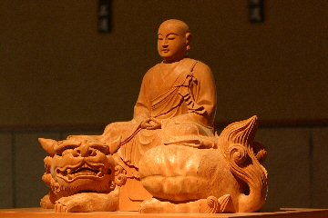

恩愛をあはれむといふは、恩愛をなげすつるなり。(行持より)
恩愛、佛教では父母の恩、國王の恩、衆生の恩、三寶(佛法僧)の恩を四恩といい、それぞれが自分自身の力では如何ともすることもできないことを「恩」というのである。父母、國土大地、人々がなければ私は今ここにいない、そして今ここに佛法とともにある。これを「恩」あるいは「恩愛」というのだ。
だから恩愛とは「今」ということである。恩愛とは「本來」ということである。
そして恩愛をあはれむ、いつくしむということは恩愛をどうする、こうするということではない。どうする、こうするということから離れるのだ。それが「恩愛をなげすつるなり」なのである。
「今」をあはれむといふは、「今」をなげすつるなり。
「本來」をあはれむといふは、「本來」をなげすつるなり。
これまでの提唱
≪ 坐禅会日程 ≫

月例坐禪會 2月11日
2月4日から予約受付
「日々の坐禪・動中の功夫」 2月1日(木） 2月8日(木）
當日3日前からメールにて受け付けます。
夜坐 2月24日
2月17日から予約受付
摂心 次回未定
坐禪會について
初めて松門寺の坐禪會に參加される方へ
坐禪会の様子
坐禪堂
参禪者の声
≪ 著作 ≫
著書の紹介
禪との出会い
≪ 祖録 ≫
永嘉大師證道歌(PDF 2013/03/11版）
三祖大師信心銘(PDF 2010/05/03版）
從 容 録(PDF 2012/02/21版）
正法眼蔵
普勸坐禪儀
信心銘
證道歌
無門關
碧巖録
從容録
問い合わせ、質問などはこちらまで連絡して下さい。
〒192-0914 東京都八王子市片倉町２１２番地 松門寺
TEL 042-635-1363
付近の地図
(2024年1月28日更新)